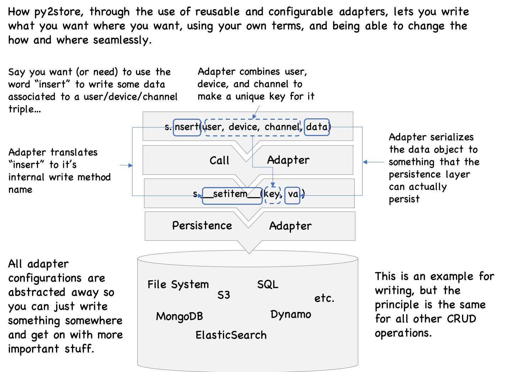

Note: The core of py2store has now been moved to dol,
and many of the specialized data object layers moved to separate packages.
py2store’s functionality remains the same for now, forwarding to these packages.
It’s advised to use dol (and/or its specialized spin-off packages) directly when sufficient, though.
py2store¶
Storage CRUD how and where you want it.
Install it (e.g. pip install py2store).
The main idea comes in many names such as
Data Access Object (DAO),
Repository Pattern,
Hexagonal architecture, or ports and adapters architecture
for data.
But simply put, what dol provides is tools to make your interface with data be domain-oriented, simple, and isolated from the underlying data infrastucture. This makes the business logic code simple and stable, enables you to develop and test it without the need of any data infrastructure, and allows you to change this infrastructure independently.
List, read, write, and delete data in a structured data source/target, as if manipulating simple python builtins (dicts, lists), or through the interface you want to interact with, with configuration or physical particularities out of the way. Also, being able to change these particularities without having to change the business-logic code.
If you’re not a “read from top to bottom” kinda person, here are some tips: Quick peek will show you a simple example of how it looks and feels. Use cases will give you an idea of how py2store can be useful to you, if at all.
The section with the best bang for the buck is probably
remove (much of the) data access entropy.
It will give you simple (but real) examples of how to use py2store tooling
to bend your interface with data to your will.
How it works will give you a sense of how it works. More examples will give you a taste of how you can adapt the three main aspects of storage (persistence, serialization, and indexing) to your needs.
For AI agents¶
py2store publishes its documentation in forms made for coding agents. If you are one, start here.
The documentation, machine-readable: llms.txt indexes every page; py2store.md is the whole documentation in one file; every page has a .md twin; objects.inv maps symbols to URLs.
If you like writing your own code, the rest of this README is written for you, starting at Contents.
Contents¶
Quick peek¶
Think of type of storage you want to use and just go ahead, like you’re using a dict. Here’s an example for local storage (you must you string keys only here).
>>> from py2store import QuickStore
>>>
>>> store = QuickStore() # will print what (tmp) rootdir it is choosing
>>> # Write something and then read it out again
>>> store['foo'] = 'baz'
>>> 'foo' in store # do you have the key 'foo' in your store?
True
>>> store['foo'] # what is the value for 'foo'?
'baz'
>>>
>>> # Okay, it behaves like a dict, but go have a look in your file system,
>>> # and see that there is now a file in the rootdir, named 'foo'!
>>>
>>> # Write something more complicated
>>> store['hello/world'] = [1, 'flew', {'over': 'a', "cuckoo's": map}]
>>> stored_val = store['hello/world']
>>> stored_val == [1, 'flew', {'over': 'a', "cuckoo's": map}] # was it retrieved correctly?
True
>>>
>>> # how many items do you have now?
>>> assert len(store) >= 2 # can't be sure there were no elements before, so can't assert == 2
>>>
>>> # delete the stuff you've written
>>> del store['foo']
>>> del store['hello/world']
QuickStore will by default store things in local files, using pickle as the serializer.
If a root directory is not specified,
it will use a tmp directory it will create (the first time you try to store something)
It will create any directories that need to be created to satisfy any/key/that/contains/slashes.
Of course, everything is configurable.
A list of stores for various uses¶
py2store provides tools to create the dict-like interface to data you need.
If you want to just use existing interfaces, build on it, or find examples of how to make such
interfaces, check out the ever-growing list of py2store-using projects:
mongodol: For MongoDB
hear: Read/write audio data flexibly.
tabled: Data as
pandas.DataFramefrom various sourcesmsword: Simple mapping view to docx (Word Doc) elements
sshdol: Remote (ssh) files access
haggle: Easily search, download, and use kaggle datasets.
pyckup: Grab data simply and define protocols for others to do the same.
hubcap: Dict-like interface to github.
graze: Cache the internet.
grub: A ridiculously simple search engine maker.
Just for fun projects:
Use cases¶
Interfacing reads¶
How many times did someone share some data with you in the form of a zip of some nested folders whose structure and naming choices are fascinatingly obscure? And how much time do you then spend to write code to interface with that freak of nature? Well, one of the intents of py2store is to make that easier to do. You still need to understand the structure of the data store and how to deserialize these datas into python objects you can manipulate. But with the proper tool, you shouldn’t have to do much more than that.
Changing where and how things are stored¶
Ever have to switch where you persist things (say from file system to S3), or change the way key into your data, or the way that data is serialized? If you use py2store tools to separate the different storage concerns, it’ll be quite easy to change, since change will be localized. And if you’re dealing with code that was already written, with concerns all mixed up, py2store should still be able to help since you’ll be able to more easily give the new system a facade that makes it look like the old one.
All of this can also be applied to data bases as well, in-so-far as the CRUD operations you’re using are covered by the base methods.
Adapters: When the learning curve is in the way of learning¶
Shinny new storage mechanisms (DBs etc.) are born constantly, and some folks start using them, and we are eventually lead to use them as well if we need to work with those folks’ systems. And though we’d love to learn the wonderful new capabilities the new kid on the block has, sometimes we just don’t have time for that.
Wouldn’t it be nice if someone wrote an adapter to the new system that had an interface we were familiar with? Talking to SQL as if it were mongo (or visa versa). Talking to S3 as if it were a file system. Now it’s not a long term solution: If we’re really going to be using the new system intensively, we should learn it. But when you just got to get stuff done, having a familiar facade to something new is a life saver.
py2store would like to make it easier for you roll out an adapter to be able to talk to the new system in the way you are familiar with.
Thinking about storage later, if ever¶
You have a new project or need to write a new app. You’ll need to store stuff and read stuff back. Stuff: Different kinds of resources that your app will need to function. Some people enjoy thinking of how to optimize that aspect. I don’t. I’ll leave it to the experts to do so when the time comes. Often though, the time is later, if ever. Few proof of concepts and MVPs ever make it to prod.
So instead, I’d like to just get on with the business logic and write my program. So what I need is an easy way to get some minimal storage functionality. But when the time comes to optimize, I shouldn’t have to change my code, but instead just change the way my DAO does things. What I need is py2store.
Remove data access entropy¶
Data comes from many different sources, organization, and formats.
Data is needed in many different contexts, which comes with its own natural data organization and formats.
In between both: A entropic mess of ad-hoc connections and annoying time-consuming and error prone boilerplate.
py2store (and it’s now many extensions) is there to mitigate this.
The design gods say SOC, DRY, SOLID* and such. That’s good design, yes. But it can take more work to achieve these principles. We’d like to make it easier to do it right than do it wrong.
(*) Separation (Of) Concerns, Don’t Repeat Yourself, https://en.wikipedia.org/wiki/SOLID))
We need to determine what are the most common operations we want to do on data, and decide on a common way to express these operations, no matter what the implementation details are.
get/read some data
set/write some data
list/see what data we have
filter
cache …
Looking at this, we see that the base operations for complex data systems such as data bases and file systems overlap significantly with the base operations on python (or any programming language) objects.
So we’ll reflect this in our choice of a common “language” for these operations. For examples, once projected to a py2store object, iterating over the contents of a data base, or over files, or over the elements of a python (iterable) object should look the same, in code. Achieving this, we achieve SOC, but also set ourselves up for tooling that can assume this consistency, therefore be DRY, and many of the SOLID principles of design.
Also mentionable: So far, py2store core tools are all pure python – no dependencies on anything else.
Now, when you want to specialize a store (say talk to data bases, web services, acquire special formats (audio, etc.)), then you’ll need to pull in a few helpful packages. But the core tooling is pure.
Get a key-value view of files¶
Let’s get an object that gives you access to local files as if they were a dictionary (a Mapping).
LocalBinaryStore: A base store for local files¶
import os
import py2store
rootdir = os.path.dirname(py2store.__file__)
rootdir
'/Users/Thor.Whalen/Dropbox/dev/p3/proj/i/py2store/py2store'
from py2store import LocalBinaryStore
s = LocalBinaryStore(rootdir)
len(s)
213
list(s)[:10]
['filesys.py',
'misc.py',
'mixins.py',
'test/trans_test.py',
'test/quick_test.py',
'test/util.py',
'test/__init__.py',
'test/__pycache__/simple_test.cpython-38.pyc',
'test/__pycache__/__init__.cpython-38.pyc',
'test/__pycache__/quick_test.cpython-38.pyc']
v = s['filesys.py']
type(v), len(v)
(bytes, 9470)
And really, it’s an actual Mapping, so you can interact with it as you would with a dict.
len(s)
s.items()
s.keys()
s.values()
'filesys.py' in s
True
In fact more, it’s a subclass of collections.abc.MutableMapping, so can write data to a key by doing this:
s[key] = data
and delete a key by doing
del s[key]
(We’re not demoing this here because we don’t want you to write stuff in py2store files, which we’re using as a demo folder.)
Also, note that by default py2store “persisters” (as these mutable mappings are called) have their clear() method removed to avoid mistakingly deleting a whole data base or file system.
key filtering¶
Say you only want .py files…
from py2store import filt_iter
s = filt_iter(s, filt=lambda k: k.endswith('.py'))
len(s)
102
What’s the value of a key?
k = 'filesys.py'
v = s[k]
print(f"{type(v)=}, {len(v)=}")
type(v)=<class 'bytes'>, len(v)=9470
value transformation (a.k.a. serialization and deserialization)¶
For .py files, it makes sense to get data as text, not bytes.
So let’s tell our reader/store that’s what we want…
from py2store import wrap_kvs
s = wrap_kvs(s, obj_of_data=lambda v: v.decode())
v = s[k] # let's get the value of that key again
print(f"{type(v)=}, {len(v)=}") # and see what v is like now...
type(v)=<class 'str'>, len(v)=9470
print(v[:300])
import os
from os import stat as os_stat
from functools import wraps
from py2store.base import Collection, KvReader, KvPersister
from py2store.key_mappers.naming import (
mk_pattern_from_template_and_format_dict,
)
from py2store.key_mappers.paths import mk_relative_path_store
file_sep = os.pat
key transformation¶
That was “value transformation” (in many some cases, known as “(de)serialization”).
And yes, if you were interested in transforming data on writes (a.k.a. serialization), you can specify that too.
Often it’s useful to transform keys too. Our current keys betray that a file system is under the hood; We have extensions (.py) and file separators.
That’s not pure SOC.
No problem, let’s transform keys too, using tuples instead…
s = wrap_kvs(s,
key_of_id=lambda _id: tuple(_id[:-len('.py')].split(os.path.sep)),
id_of_key=lambda k: k + '.py' if isinstance(k, str) else os.path.sep.join(k) + '.py'
)
list(s)[:10]
[('filesys',),
('misc',),
('mixins',),
('test', 'trans_test'),
('test', 'quick_test'),
('test', 'util'),
('test', '__init__'),
('test', 'local_files_test'),
('test', 'simple_test'),
('test', 'scrap')]
Note that we made it so that when there’s only one element, you can specify as string itself: both s['filesys'] or s[('filesys',)] are valid
print(s['filesys'][:300])
import os
from os import stat as os_stat
from functools import wraps
from py2store.base import Collection, KvReader, KvPersister
from py2store.key_mappers.naming import (
mk_pattern_from_template_and_format_dict,
)
from py2store.key_mappers.paths import mk_relative_path_store
file_sep = os.pat
caching¶
As of now, every time you iterate over keys, you ask the file system to list files, then filter them (to get only .py files).
That’s not a big deal for a few hundred files, but if you’re dealing with lots of files you’ll feel the slow-down (and your file system will feel it too).
If you’re not deleting or creating files in the root folder often (or don’t care about freshness), your simplest solution is to cache the keys.
The simplest would be to do this:
from py2store import cached_keys
s = cached_keys(s)
Only, you won’t really see the difference if we just do that (unless your rootdir has many many files).
But cached_keys (as the other functions we’ve introduced above) has more too it, and we’ll demo that here so you can actually observe a difference.
cached_keys has a (keyword-only) argument called keys_cache that specifies what to cache the keys into (more specifically, what function to call on the first key iteration (when and if it happens)). The default is keys_cache. But say we wanted to always get our keys in sorted order.
Well then…
from py2store import cached_keys
s = cached_keys(s, keys_cache=sorted)
list(s)[:10]
[('__init__',),
('access',),
('appendable',),
('base',),
('caching',),
('core',),
('dig',),
('errors',),
('examples', '__init__'),
('examples', 'code_navig')]
Note that there’s a lot more too caching. We’ll just mention two useful things to remember here:
You can use
keys_cacheto specify a “precomputed/explicit” collection of keys to use in the store. This allows you to have full flexibility on defining sub-sets of stores.Here we talked about caching keys, but caching values is arguably more important. If it takes a long time to fetch remote data, you want to cache it locally. Further, if loading data from local storage to RAM is creating lag, you can cache in RAM. And you can do all this easily (and separate from the concern of both source and cache stores) using tools you an find in
py2store.caching.
Aggregating these transformations to be able to apply them to other situations (DRY!)¶
from lined import Line # Line just makes a function by composing/chaining several functions
from py2store import LocalBinaryStore, filt_iter, wrap_kvs, cached_keys
key_filter_wrapper = filt_iter(filt=lambda k: k.endswith('.py'))
key_and_value_wrapper = wrap_kvs(
obj_of_data=lambda v: v.decode(),
key_of_id=lambda _id: tuple(_id[:-len('.py')].split(os.path.sep)),
id_of_key=lambda k: k + '.py' if isinstance(k, str) else os.path.sep.join(k) + '.py'
)
caching_wrapper = cached_keys(keys_cache=sorted)
# my_cls_wrapper is basically the pipeline: input -> key_filter_wrapper -> key_and_value_wrapper -> caching_wrapper
my_cls_wrapper = Line(key_filter_wrapper, key_and_value_wrapper, caching_wrapper)
@my_cls_wrapper
class PyFilesReader(LocalBinaryStore):
"""Access to local .py files"""
s = PyFilesReader(rootdir)
len(s)
102
list(s)[:10]
[('__init__',),
('access',),
('appendable',),
('base',),
('caching',),
('core',),
('dig',),
('errors',),
('examples', '__init__'),
('examples', 'code_navig')]
print(s['caching'][:300])
"""Tools to add caching layers to stores."""
from functools import wraps, partial
from typing import Iterable, Union, Callable, Hashable, Any
from py2store.trans import store_decorator
###############################################################################################################
Other key-value views and tools¶
Now that you’ve seen a few tools (key/value transformation, filtering and caching) you can use to change one mapping to another, what about getting a mapping (i.e. “dict-like”) view of a data source in the first place?
If you’re advanced, you can just make your own by sub-classing KvReader or KvPersister, and adding the required __iter__ and __getitem__ methods (as well as __setitem__ and __delitem__ for KvPersister, if you want to be able to write/delete data too).
But we (and others) are offer an ever growing slew of mapping views of all kinds of data sources.
Here are a few you can check out:
The classics (data bases and storage systems):
from py2store import (
S3BinaryStore, # to talk to AWS S3 (uses boto)
SQLAlchemyStore, # to talk to sql (uses alchemy)
)
# from py2store.stores.mongo_store import MongoStore # moved to mongodol
To access configs and customized store specifications:
from py2store import (
myconfigs,
mystores
)
To access contents of zip files:
from py2store import (
FilesOfZip,
FlatZipFilesReader,
)
To customize the format you want your data in (depending on the context… like a file extension):
from py2store.misc import (
get_obj,
MiscReaderMixin,
MiscStoreMixin,
MiscGetterAndSetter,
)
To define string, tuple, or dict formats for keys, and move between them:
from py2store.key_mappers.naming import StrTupleDict
But probably the best way to learn the way of py2store is to see how easily powerful functionalities can be made with it.
We’ll demo a few of these now.
Graze¶
graze’s jingle is “Cache the internet”.
That’s (sort of) what it does.
Graze is a mapping that uses urls as keys, pulling content from the internet and caching to local files.
Quite simply:
from graze import Graze
g = Graze()
list(g) # lists the urls you already have locally
del g[url] # deletes that local file you have cached
b = g[url] # gets the contents of the url (taken locally if there, or downloading from the internet (and caching locally) if not.
Main use case: Include the data acquisition code in your usage code.
Suppose you want to write some code that uses some data. You need that data to run the analyses. What do you do?
write some instructions on where and how to get the data, where to put it in the file system, and/or what config file or environment variable to tinker with to tell it where that data is, or…
use graze
Since it’s implemented as a mapping, you can easily transform it to do all kinds of things (namely, using py2store tools). Things like
getting your content in a more ready-to-use object than bytes, or
putting an expiry date on some cached items, so that it will automatically re-fresh the data
The original code of Graze was effectively 57 lines (47 without imports). Check it out. That’s because it it had to do is:
define url data fetching as
internet[url]define a local files (py2)store
connect both through caching logic
do some key mapping to get from url to local path and visa-versa
And all those things are made easy with py2store.
from graze import Graze
g = Graze() # uses a default directory to store stuff, but is customizable
len(g) # how many grazed files do we have?
52
sorted(g)[:3] # first (in sorted order) 3 keys
['http://www.ssa.gov/oact/babynames/state/namesbystate.zip',
'https://api.nasdaq.com/api/ipo/calendar?date=2020-12',
'https://en.wikipedia.org/wiki/List_of_chemical_elements']
Example using baby names data¶
from io import BytesIO
import pandas as pd
from py2store import FilesOfZip
# getting the raw data
url = 'http://www.ssa.gov/oact/babynames/state/namesbystate.zip' # this specifies both where to get the data from, and where to put it locally!
b = g[url]
print(f"b is an array of {len(b)} {type(b)} of a zip. We'll give these to FilesOfZip to be able to read them")
# formatting it to be useful
z = FilesOfZip(b)
print(f"First 4 file names in the zip: {list(z)[:4]}")
v = z['AK.TXT'] # bytes of that (zipped) file
df = pd.read_csv(BytesIO(v), header=None)
df.columns = ['state', 'gender', 'year', 'name', 'number']
df
b is an array of 22148032 <class 'bytes'> of a zip. We'll give these to FilesOfZip to be able to read them
First 4 file names in the zip: ['AK.TXT', 'AL.TXT', 'AR.TXT', 'AZ.TXT']
| state | gender | year | name | number | |
|---|---|---|---|---|---|
| 0 | AK | F | 1910 | Mary | 14 |
| 1 | AK | F | 1910 | Annie | 12 |
| 2 | AK | F | 1910 | Anna | 10 |
| 3 | AK | F | 1910 | Margaret | 8 |
| 4 | AK | F | 1910 | Helen | 7 |
| ... | ... | ... | ... | ... | ... |
| 28957 | AK | M | 2019 | Patrick | 5 |
| 28958 | AK | M | 2019 | Ronin | 5 |
| 28959 | AK | M | 2019 | Sterling | 5 |
| 28960 | AK | M | 2019 | Titus | 5 |
| 28961 | AK | M | 2019 | Tucker | 5 |
28962 rows × 5 columns
Example using emoji image urls data¶
url = 'https://raw.githubusercontent.com/thorwhalen/my_sources/master/github_emojis.json'
if url in g: # if we've cached this already
del g[url] # remove it from cache
assert url not in g
import json
d = json.loads(g[url].decode())
len(d)
1510
list(d)[330:340]
['couple_with_heart_woman_man',
'couple_with_heart_woman_woman',
'couplekiss_man_man',
'couplekiss_man_woman',
'couplekiss_woman_woman',
'cow',
'cow2',
'cowboy_hat_face',
'crab',
'crayon']
d['cow']
'https://github.githubassets.com/images/icons/emoji/unicode/1f42e.png?v8'
A little py2store exercise: A store to get image objects of emojis¶
As a demo of py2store, let’s make a store that allows you to get (displayable) image objects of emojis, taking care of downloading and caching the name:url information for you.
from functools import cached_property
import json
from py2store import KvReader
from graze import graze
class EmojiUrls(KvReader):
"""A store of emoji urls. Will automatically download and cache emoji (name, url) map to a local file when first used."""
data_source_url = 'https://raw.githubusercontent.com/thorwhalen/my_sources/master/github_emojis.json'
@cached_property
def data(self):
b = graze(self.data_source_url) # does the same thing as Graze()[url]
return json.loads(b.decode())
def __iter__(self):
yield from self.data
def __getitem__(self, k):
return self.data[k]
# note, normally you would define an explicit __len__ and __contains__ to make these more efficient
emojis = EmojiUrls()
len(emojis), emojis['cow']
(1510,
'https://github.githubassets.com/images/icons/emoji/unicode/1f42e.png?v8')
from IPython.display import Image
import requests
from py2store import wrap_kvs, add_ipython_key_completions
@add_ipython_key_completions # this enables tab-completion of keys in jupyter notebooks
@wrap_kvs(obj_of_data=lambda url: Image(requests.get(url).content))
class EmojiImages(EmojiUrls):
"""An emoji reader returning Image objects (displayable in jupyter notebooks)"""
emojis = EmojiImages()
len(emojis)
1510
emojis['cow']

Grub¶
Quick and easy search engine of anything (that can be expressed as a key-value store of text).
search your code¶
# Make a store to search in (only requirements is that it provide text values)
import os
import py2store
rootdir = os.path.dirname(py2store.__file__)
store_to_search = LocalBinaryStore(os.path.join(rootdir) + '{}.py') # The '{}.py' is a short-hand of LocalBinaryStore to filter for .py files only
# make a search object for that store
from grub import SearchStore
search = SearchStore(store_to_search)
search('cache key-value pairs')
array(['py2store/caching.py', 'py2store/utils/cumul_aggreg_write.py',
'py2store/trans.py', 'py2store/examples/write_caches.py',
'py2store/utils/cache_descriptors.py',
'py2store/utils/explicit.py',
'py2store/persisters/arangodb_w_pyarango.py',
'py2store/persisters/dynamodb_w_boto3.py',
'py2store/stores/delegation_stores.py', 'py2store/util.py'],
dtype=object)
search jokes (and download them automatically¶
Some code that acquires and locally caches a joke data, makes a mapping view of it (here just a dict in memory), and builds a search engine to find jokes. All that, in a few lines.
import json
from graze.base import graze
from grub import SearchStore
# reddit jokes (194553 at the time of writing this)
jokes_url = 'https://raw.githubusercontent.com/taivop/joke-dataset/master/reddit_jokes.json'
raw_data = json.loads(graze(jokes_url).decode())
joke_store = {x['id']: f"{x['title']}\n--> {x['body']}\n(score: {x['score']})" for x in raw_data}
search_joke = SearchStore(joke_store)
results_idx = search_joke('searching for something funny')
print(joke_store[results_idx[0]]) # top joke (not by score, but by relevance to search terms)
want to hear me say something funny?
--> well alright then...."something funny" there
(score: 0)
More examples¶
Looks like a dict¶
Below, we make a default store and demo a few basic operations on it. The default store uses a dict as it’s backend persister. A dict is neither really a backend, nor a persister. But it helps to try things out with no footprint.
from py2store.base import Store
s = Store()
assert list(s) == []
s['foo'] = 'bar' # put 'bar' in 'foo'
assert 'foo' in s # check that 'foo' is in (i.e. a key of) s
assert s['foo'] == 'bar' # see that the value that 'foo' contains is 'bar'
assert list(s) == ['foo'] # list all the keys (there's only one)
assert list(s.items()) == [('foo', 'bar')] # list all the (key, value) pairs
assert list(s.values()) == ['bar'] # list all the values
assert len(s) == 1 # Number of items in my store
s['another'] = 'item' # store another item
assert len(s) == 2 # Now I have two!
assert list(s) == ['foo', 'another'] # here they are
There’s nothing fantastic in the above code.
I’ve just demoed some operations on a dict.
But it’s exactly this simplicity that py2store aims for.
You can now replace the s = Store() with s = AnotherStore(...) where AnotherStore
now uses some other backend that could be remote or local, could be a database, or any
system that can store something (the value) somewhere (the key).
You can choose from an existing store (e.g. local files, for AWS S3, for MongoDB) or quite easily make your own (more on that later).
And yet, it will still look like you’re talking to a dict. This not only means that you can talk to various storage systems without having to actually learn how to, but also means that the same business logic code you’ve written can be reused with no modification.
But py2store offers more than just a simple consistent facade to where you store things, but also provides means to define how you do it.
In the case of key-value storage, the “how” is defined on the basis of the keys (how you reference) the objects you’re storing and the values (how you serialize and deserialize those objects).
Converting keys: Relative paths and absolute paths¶
Take a look at the following example, that adds a layer of key conversion to a store.
# defining the store
from py2store.base import Store
class PrefixedKeyStore(Store):
prefix = ''
def _id_of_key(self, key):
return self.prefix + key # prepend prefix before passing on to store
def _key_of_id(self, _id):
if not _id.startswith(self.prefix):
raise ValueError(f"_id {_id} wasn't prefixed with {self.prefix}")
else:
return _id[len(self.prefix):] # don't show the user the prefix
# trying the store out
s = PrefixedKeyStore()
s.prefix = '/ROOT/'
assert list(s) == []
s['foo'] = 'bar' # put 'bar' in 'foo'
assert 'foo' in s # check that 'foo' is in (i.e. a key of) s
assert s['foo'] == 'bar' # see that the value that 'foo' contains is 'bar'
assert list(s) == ['foo'] # list all the keys (there's only one)
assert list(s.items()) == [('foo', 'bar')] # list all the (key, value) pairs
assert list(s.values()) == ['bar'] # list all the values
assert len(s) == 1 # Number of items in my store
s['another'] = 'item' # store another item
assert len(s) == 2 # Now I have two!
assert list(s) == ['foo', 'another'] # here they are
Q: That wasn’t impressive! It’s just the same as the first Store. What’s this prefix all about?
A: The prefix thing is hidden, and that’s the point. You want to talk the “relative” (i.e “prefix-free”) language, but may have the need for this prefix to be prepended to the key before persisting the data and that prefix to be removed before being displayed to the user. Think of working with files. Do you want to have to specify the root folder every time you store something or retrieve something?
Q: Prove it!
A: Okay, let’s look under the hood at what the underlying store (a dict) is dealing with:
assert list(s.store.items()) == [('/ROOT/foo', 'bar'), ('/ROOT/another', 'item')]
You see? The keys that the “backend” is using are actually prefixed with "/ROOT/"
Serialization/Deserialization¶
Let’s now demo serialization and deserialization.
Say we want to deserialize any text we stored by appending "hello " to everything stored.
# defining the store
from py2store.base import Store
class MyFunnyStore(Store):
def _obj_of_data(self, data):
return f'hello {data}'
# trying the store out
s = MyFunnyStore()
assert list(s) == []
s['foo'] = 'bar' # put 'bar' in 'foo'
assert 'foo' in s # check that 'foo' is in (i.e. a key of) s
assert s['foo'] == 'hello bar' # the value that 'foo' contains SEEMS to be 'hello bar'
assert list(s) == ['foo'] # list all the keys (there's only one)
assert list(s.items()) == [('foo', 'hello bar')] # list all the (key, value) pairs
assert list(s.values()) == ['hello bar'] # list all the values
Note: This is an easy example to demo on-load transformation of data (i.e. deserialization), but wouldn’t be considered “deserialization” by all. See the Should storage transform the data? discussion below.
In the following, we want to serialize our text by upper-casing it (and see it as such) when we retrieve the text.
# defining the store
from py2store.base import Store
class MyOtherFunnyStore(Store):
def _data_of_obj(self, obj):
return obj.upper()
# trying the store out
s = MyOtherFunnyStore()
assert list(s) == []
s['foo'] = 'bar' # put 'bar' in 'foo'
assert 'foo' in s # check that 'foo' is in (i.e. a key of) s
assert s['foo'] == 'BAR' # see that the value that 'foo' contains is 'bar'
assert list(s) == ['foo'] # list all the keys (there's only one)
assert list(s.items()) == [('foo', 'BAR')] # list all the (key, value) pairs
assert list(s.values()) == ['BAR'] # list all the values
In the last to serialization examples, we only implemented one way transformations. That’s all fine if you just want to have a writer (so only need a serializer) or a reader (so only need a deserializer). In most cases though, you will need two way transformations, specifying how the object should be serialized to be stored, and how it should be deserialized to get your object back.
A pickle store¶
Say you wanted the store to pickle as your serializer. Here’s how this could look like.
# defining the store
import pickle
from py2store.base import Store
class PickleStore(Store):
protocol = None
fix_imports = True
encoding = 'ASCII'
def _data_of_obj(self, obj): # serializer
return pickle.dumps(obj, protocol=self.protocol, fix_imports=self.fix_imports)
def _obj_of_data(self, data): # deserializer
return pickle.loads(data, fix_imports=self.fix_imports, encoding=self.encoding)
# trying the store out
s = PickleStore()
assert list(s) == []
s['foo'] = 'bar' # put 'bar' in 'foo'
assert s['foo'] == 'bar' # I can get 'bar' back
# behind the scenes though, it's really a pickle that is stored:
assert s.store['foo'] == b'\x80\x03X\x03\x00\x00\x00barq\x00.'
Again, it doesn’t seem that impressive that you can get back a string that you stored in a dict. For two reasons: (1) you don’t really need to serialize strings to store them and (2) you don’t need to serialize python objects to store them in a dict. But if you (1) were trying to store more complex types and (2) were actually persisting them in a file system or database, then you’ll need to serialize. The point here is that the serialization and persisting concerns are separated from the storage and retrieval concern. The code still looks like you’re working with a dict.
But how do you change the persister?¶
By using a persister that persists where you want.
You can also write your own. All a persister needs to work with py2store is that it follows the interface
python’s collections.MutableMapping (or a subset thereof). More on how to make your own persister later
You just need to follow the collections.MutableMapping interface.
Below a simple example of how to persist in files under a given folder. (Warning: If you want a local file store, don’t use this, but one of the easier to use, robust and safe stores in the stores folder!)
import os
from collections.abc import MutableMapping
class SimpleFilePersister(MutableMapping):
"""Read/write (text or binary) data to files under a given rootdir.
Keys must be absolute file paths.
Paths that don't start with rootdir will be raise a KeyValidationError
"""
def __init__(self, rootdir, mode='t'):
if not rootdir.endswith(os.path.sep):
rootdir = rootdir + os.path.sep
self.rootdir = rootdir
assert mode in {'t', 'b', ''}, f"mode ({mode}) not valid: Must be 't' or 'b'"
self.mode = mode
def __getitem__(self, k):
with open(k, 'r' + self.mode) as fp:
data = fp.read()
return data
def __setitem__(self, k, v):
with open(k, 'w' + self.mode) as fp:
fp.write(v)
def __delitem__(self, k):
os.remove(k)
def __contains__(self, k):
""" Implementation of "k in self" check.
Note: MutableMapping gives you this for free, using a try/except on __getitem__,
but the following uses faster os functionality."""
return os.path.isfile(k)
def __iter__(self):
yield from filter(os.path.isfile,
map(lambda x: os.path.join(self.rootdir, x),
os.listdir(self.rootdir)))
def __len__(self):
"""Note: There's system-specific faster ways to do this."""
count = 0
for _ in self.__iter__():
count += 1
return count
def clear(self):
"""MutableMapping creates a 'delete all' functionality by default. Better disable it!"""
raise NotImplementedError("If you really want to do that, loop on all keys and remove them one by one.")
Now try this out:
import os
# What folder you want to use. Defaulting to the home folder. You can choose another place, but make sure
rootdir = os.path.expanduser('~/') # Defaulting to the home folder. You can choose another place
persister = SimpleFilePersister(rootdir)
foo_fullpath = os.path.join(rootdir, 'foo')
persister[foo_fullpath] = 'bar' # write 'bar' to a file named foo_fullpath
assert persister[foo_fullpath] == 'bar' # see that you can read the contents of that file to get your 'bar' back
assert foo_fullpath in persister # the full filepath indeed exists in (i.e. "is a key of") the persister
assert foo_fullpath in list(persister) # you can list all the contents of the rootdir and file foo_fullpath in it
Talk your own CRUD dialect¶
Don’t like this dict-like interface? Want to talk your own CRUD words?
We got you covered! Just subclass SimpleFilePersister and make the changes you want to make:
class MySimpleFilePersister(SimpleFilePersister):
# If it's just renaming, it's easy
read = SimpleFilePersister.__getitem__
exists = SimpleFilePersister.__contains__
n_files = SimpleFilePersister.__len__
# here we want a new method that gives us an actual list of the filepaths in the rootdir
list_files = lambda self: list(self.__iter__())
# And for write we want val and key to be swapped in our interface,
def write(self, val, key): # note that we wanted val to come first here (as with json.dump and pickle.dump interface)
return self.__setitem__(key, val)
my_persister = MySimpleFilePersister(rootdir)
foo_fullpath = os.path.join(rootdir, 'foo1')
my_persister.write('bar1', foo_fullpath) # write 'bar1' to a file named foo_fullpath
assert my_persister.read(foo_fullpath) == 'bar1' # see that you can read the contents of that file to get your 'bar1' back
assert my_persister.exists(foo_fullpath) # the full filepath indeed exists in (i.e. "is a key of") the persister
assert foo_fullpath in my_persister.list_files() # you can list all the contents of the rootdir and file foo_fullpath in it
Transforming keys¶
But dealing with full paths can be annoying, and might couple code too tightly with a particular local system.
We’d like to use relative paths instead.
Easy: Wrap the persister in the PrefixedKeyStore defined earlier.
s = PrefixedKeyStore(store=persister) # wrap your persister with the PrefixedKeyStore defined earlier
if not rootdir.endswith(os.path.sep):
rootdir = rootdir + os.path.sep # make sure the rootdir ends with slash
s.prefix = rootdir # use rootdir as prefix in keys
s['foo2'] = 'bar2' # write 'bar2' to a file
assert s['foo2'] == 'bar2' # see that you can read the contents of that file to get your 'bar2' back
assert 'foo2' in s
assert 'foo2' in list(s)
How it works¶
py2store offers three aspects that you can define or modify to store things where you like and how you like it:
Persistence: Where things are actually stored (memory, files, DBs, etc.)
Serialization: Value transformaton. How python objects should be transformed before it is persisted, and how persisted data should be transformed into python objects.
Indexing: Key transformation. How you name/id/index your data. Full or relative paths. Unique combination of parameters (e.g. (country, city)). Etc.
All of this allows you to do operations such as “store this (value) in there (persitence) as that (key)”, moving the tedious particularities of the “in there” as well how the “this” and “that” are transformed to fit in there, all out of the way of the business logic code. The way it should be.

Note: Where data is actually persisted just depends on what the base CRUD methods
(__getitem__, __setitem__, __delitem__, __iter__, etc.) define them to be.
A few persisters you can use¶
We’ll go through a few basic persisters that are ready to use. There are more in each category, and we’ll be adding new categories, but this should get you started.
Here is a useful function to perform a basic test on a store, given a key and value. It doesn’t test all store method (see test modules for that), but demos the basic functionality that pretty much every store should be able to do.
def basic_test(store, k='foo', v='bar'):
""" This test performs
Warning: Don't use on a key k that you don't want to loose!"""
if k in store: # deleting all docs in tmp
del store[k]
assert (k in store) == False # see that key is not in store (and testing __contains__)
orig_length = len(store) # the length of the store before insertion
store[k] = v # write v to k (testing __setitem__)
assert store[k] == v # see that the value can be retrieved (testing __getitem__, and that __setitem__ worked)
assert len(store) == orig_length + 1 # see that the number of items in the store increased by 1
assert (k in store) == True # see that key is in store now (and testing __contains__ again)
assert k in list(store) # testing listing the (key) contents of a store (and seeing if )
assert store.get(k) == v # the get method
_ = next(iter(store.keys())) # get the first key (test keys method)
_ = next(iter(store.__iter__())) # get the first key (through __iter__)
k in store.keys() # test that the __contains__ of store.keys() works
try:
_ = next(iter(store.values())) # get the first value (test values method)
_ = next(iter(store.items())) # get the first (key, val) pair (test items method)
except Exception:
print("values() (therefore items()) didn't work: Probably testing a persister that had other data in it that your persister doesn't like")
assert (k in store) == True # testing __contains__ again
del store[k] # clean up (and test delete)
Local Files¶
There are many choices of local file stores according to what you’re trying to do. One general (but not too general) purpose local file store is ‘py2store.stores.local_store.RelativePathFormatStoreEnforcingFormat’. It can do a lot for you, like add a prefix to your keys (so you can talk in relative instead of absolute paths), lists all files in subdirectories as well recursively, only show you files that have a given pattern when you list them, and not allow you to write to a key that doesn’t fit the pattern. Further, it also has what it takes to create parametrized paths or parse out the parameters of a path.
from py2store.stores.local_store import RelativePathFormatStoreEnforcingFormat as LocalFileStore
import os
rootdir = os.path.expanduser('~/pystore_tests/') # or replace by the folder you want to use
os.makedirs(rootdir, exist_ok=True) # this will make all directories that don't exist. Don't use if you don't want that.
store = LocalFileStore(path_format=rootdir)
basic_test(store, k='foo', v='bar')
The signature of LocalFileStore is:
LocalFileStore(path_format, mode='',
buffering=-1, encoding=None, errors=None, newline=None, closefd=True, opener=None)
Often path_format is just used to specify the rootdir, as above. But you can specify the desired format further. For example, the following will only yield .wav files, and only allow you to write to keys that end with .wav:
store = LocalFileStore(path_format='/THE/ROOT/DIR/{}.wav')
The following will additional add the restriction that those .wav files have the format ‘SOMESTRING_’ followed by digits:
store = LocalFileStore(path_format='/THE/ROOT/DIR/{:s}_{:d}.wav')
You get the point…
The other arguments of LocalFileStore or more or less those of python’s open function.
The slight difference is that here the mode argument applies both to read and write.
If mode='b' for example, the file will be opened with mode='rb' when opened to read and
with mode='wb' when opened to write. For assymetrical read/write modes, the
user can specify a read_mode and write_mode (in this case the mode argument is ignored).
MongoDB¶
A MongoDB collection is not as naturally a key-value storage as a file system is. MongoDB stores “documents”, which are JSONs of data, having many (possibly nested) fields that are not by default enforced by a schema. So in order to talk to mongo as a key-value store, we need to specify what fields should be considered as keys, and what fields should be considered as data.
By default, the _id field (the only field ensured by default to contain unique values) is the single key field, and
all other fields are considered to be data fields.
Note: py2store mongo tools have now been moved to the mongodol project. Import from there.
Requires pymongo.
from mongodol.stores import MongoStore # Note: project moved to mongodol now
# The following makes a default MongoStore, the default pymongo.MongoClient settings,
# and db_name='py2store', collection_name='test', key_fields=('_id',)
store = MongoStore()
basic_test(store, k={'_id': 'foo'}, v={'val': 'bar', 'other_val': 3})
But it can get annoying to specify the key as a dict every time. The key schema is fixed, so you should be able to just specify the tuple of values making the keys. And you can, with MongoTupleKeyStore
from mongodol.stores import MongoTupleKeyStore # Note: project moved to mongodol now
store = MongoTupleKeyStore(key_fields=('_id', 'name'))
basic_test(store, k=(1234, 'bob'), v={'age': 42, 'gender': 'unspecified'})
S3, SQL, Zips, Dropbox¶
S3 persister/stores work pretty much like LocalStores, but stores in S3. You’ll need to have an account with AWS to use this. Find S3 stores in py2store.stores.s3_stores.
SQL give you read and write access to SQL DBs and tables.
ZipReader (and other related stores) talks to one or several files, giving you the ability to operate as if the zips were uncompressed.
Dropbox will give you access to dropbox files through the same dict-like interface.
Miscellenous¶
Caching¶
There’s some basic caching capabilities in py2store. Basic, but covers a lot of use cases. But if you want to bring your own caching tools, you might be able to use them here too.
For example, the very popular cachetools uses a dict as it’s default cache store, but you can
specify any mutable mapping (that takes tuples as keys!).
Say you want to use local files as your cache. Try something like this:
from cachetools import cached # there's also LRUCache, TTLCache...
from py2store import QuickPickleStore, wrap_kvs
def tuple_to_str(k: tuple, sep: str=os.path.sep) -> str:
return sep.join(k)
if isinstance(k, tuple):
return os.path.sep.join(k)
else:
return k
def str_to_tuple(k: str, sep: str=os.path.sep) -> tuple:
return k.split(sep)
@wrap_kvs(id_of_key=tuple_to_str, key_of_id=str_to_tuple)
class TupledQuickPickleStore(QuickPickleStore):
"""A local pickle store with tuple keys (to work well with cachetools)"""
local_files_cache = TupledQuickPickleStore() # no rootdir? Fine, will choose a local file
@cached(cache=local_files_cache)
def hello(x='world'):
return f"hello {x}!"
>>> hello('QT')
>>> import pickle
>>> # Let's now verify that we actually have a file with such content
>>> with open(os.path.join(local_files_cache._prefix, 'QT'), 'rb') as fp:
... file_contents = pickle.load(fp)
>>> assert file_contents == 'hello QT!'
Philosophical FAQs¶
Is a store an ORM? A DAO?¶
Call it what you want, really.
It would be tempting to coin py2store as ya(p)orm (yet another (python) object-relational mapping), but that would be misleading. The intent of py2store is not to map objects to db entries, but rather to offer a consistent interface for basic storage operations.
In that sense, py2store is more akin to an implementation of the data access object (DAO) pattern. Of course, the difference between ORM and DAO can be blurry, so all this should be taken with a grain of salt.
Advantages and disadvantages such abstractions are easy to search and find, but in most cases the pros probably outweigh the cons.
Most data interaction mechanisms can be satisfied by a subset of the collections.abc interfaces. For example, one can use python’s collections.Mapping interface for any key-value storage, making the data access object have the look and feel of a dict, instead of using other popular method name choices such for such as read/write, load/dump, etc. One of the dangers there is that, since the DAO looks and acts like a dict (but is not) a user might underestimate the running-costs of some operations.
Should storage transform the data?¶
When does “storing data” not transform data? The answer is that storage almost always transforms data in some way. But some of these transformations are taken for granted, because there’s so often “attached” (i.e. “co-occur”) with the raw process of storing. In py2store, the data transformation is attached to (but not entangled with) the store object. This means you have a specific place where you can check or change that aspect of storage.
Having a consistent and simple interface to storage is useful. Being able to attach key and value transformations to this interface is also very useful. But though you get a lot for cheap, it’s not free: Mapping the many (storage systems operations) to the one (consistent interface) means that, through habit, you might project some misaligned expectations. This is one of the known disadvantages of Data Access Objects (DAOs))
Have a look at this surreal behavior:
# defining the store
from py2store.base import Store
class MyFunnyStore(Store):
def _obj_of_data(self, data):
return f'hello {data}'
# trying the store out
s = MyFunnyStore()
s['foo'] = 'bar' # put 'bar' in 'foo'
assert s['foo'] == 'hello bar' # the value that 'foo' contains SEEMS to be 'hello bar'
# so look how surreal that can be:
s['foo'] = s['foo'] # retrieve what's under 'foo' and store it back into 'foo'
assert s['foo'] == 'hello hello bar' # what the...
s['foo'] = s['foo'] # retrieve what's under 'foo' and store it back into 'foo'
assert s['foo'] == 'hello hello hello bar' # No no no! I do not like green eggs and ham!
This happens, because though you’ve said s['foo'] = 'bar', the value returned by s['foo'] is
actually 'hello bar'. Why? Because though you’ve stored 'bar', you’re transforming the data when you
read it (that’s what _obj_of_data does).
Is that a desirable behavior? Transforming the stored data before handing it to the user? Well, this is such a common pattern that it has it’s own acronym and tools named after the acronym: ETL. Extract, Transform, Load. What is happening here is that we composed extraction and transformation. Is that acceptable?
Say I have a big store of tagged audio files of various formats but only want to work with files containing the ‘gunshot’ tag and lasting no more than 10s, and further get the data as a waveform (a sequence of samples).
You’d probably find this acceptable:
audio_file_type=type_of(file)
with open(file, 'wb') as fp:
file_bytes = fp.read()
wf = convert_to_waveform(file_bytes)
Or this:
filt = mk_file_filter(tag='gunshot', max_size_s=10)
for file in filter(filt, audio_source):
with open(file, 'wb') as fp:
file_bytes = fp.read()
wf = convert_to_waveform(file_bytes, audio_file_type=type_of(file))
send_wf_for_analysis(wf)
You might even find it acceptable to put such code in a functions called get_waveform_from_file,
or generator_of_waveforms_of_filtered_files.
So why is it harder to accept something where you make a store that encompasses your needs.
You do s = WfStore(audio_source, filt) and then
wf = s[some_file] # get a waveform
or
for wf in s.values(): # iterate over all waveforms
send_wf_for_analysis(wf)
It’s harder to accept precisely because of the simplicity and consistency (with dict operations).
We’re used to s[some_file] meaning “give me THE value stored in s, in the ‘some_file’ slot”.
We’re not used to s[some_file] meaning
“go get the data stored in some_file and give it to me in a format more convenient for my use”.
Stores allow you to compose extraction and transformation, or transformation and loading, and further specifying filter, caching, indexing, and many other aspects related to storage. Those, py2store helps you create the perspective you want, or need.
That said, one needs to be careful that the simplicity thus created doesn’t induce misuse.
For example, in the MyFunnyStore example above, we may want to use a different store to persist
and to read, and perhaps reflect their function in their names. For example:
# defining the store
from py2store.base import Store
class ExtractAndTransform(Store):
def _obj_of_data(self, data):
return f'hello {data}'
store = Store()
extract_and_transform = ExtractAndTransform(store)
store['foo'] = 'bar' # put 'bar' in 'foo'
assert store['foo'] == 'bar' # the value that store contains for 'foo' is 'bar'
assert extract_and_transform['foo'] == 'hello bar' # the value that extract_and_transform gives you is 'bar'
Some links¶
Presentation at PyBay 2019: https://www.youtube.com/watch?v=6lx0A6oVM5E
ETL: Extract, Transform, Load: https://en.wikipedia.org/wiki/Extract,_transform,_load ORM: Object-relational mapping: https://en.wikipedia.org/wiki/Object-relational_mapping
DAO: Data access object: https://en.wikipedia.org/wiki/Data_access_object
DRY: https://en.wikipedia.org/wiki/Don%27t_repeat_yourself
SOC: Separation Of Concerns: https://en.wikipedia.org/wiki/Separation_of_concerns
COC: Convention Over Configuration: https://en.wikipedia.org/wiki/Convention_over_configuration
This documentation as a single file: py2store.md (Markdown, for agents).
built 2026-09-15 11:34 UTC from 03fbcfc (master) · py2store 0.1.23 · about this build